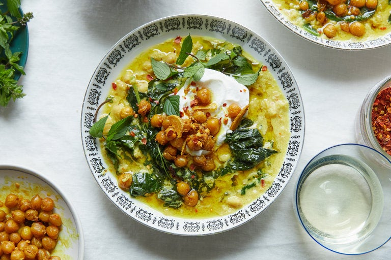

Alison Roman's Spiced Chickpea Stew

Description:
#THESTEW. It went viral for a reason. (That reason being: it's delicious. And super easy to make.) One of my favorite cold-weather dinners!
The leftovers are pretty great too.
Yield: 4 to 6 servings
Ingredients
- 1/4 cup olive oil, plus more for serving
- 4 garlic cloves, chopped
- 1 large yellow onion, chopped
- 1 (2-inch) piece ginger, finely chopped
- Kosher salt and black pepper to taste
- 1 1/2 teaspoons ground turmeric, plus more for serving
- 1 teaspoon red pepper flakes, plus more for serving
- 2 (15-ounce) cans chickpeas, drained and rinsed
- 2 (15-ounce) cans full-fat coconut milk
- 2 cups vegetable or chicken stock
- 1 bunch Swiss chard, kale, or collard greens, stems removed, torn into bite-sized pieces
- 1 cup mint leaves, for serving
- Yogurt, for serving (optional)
- Toasted pita, lavash, or other flatbread, for serving (optional)
Steps
- Heat 1/4 cup oil in a large pot over medium. Add garlic, onion, and ginger. Season with salt and pepper and cook, stirring occasionally until onion is
transluscent and starts to brown a little at the edges (3 to 5 minutes)
- Add 1 1/2 teaspoons turmeric, 1 teaspoon red pepper flakes, and the chickpeas, and season with salt and pepper. Cook, stirring frequently, so the chickpeas
sizzle and fry a bit in the spices and oil, until they've started to break down and get a little browned and crisp, 8 to 10 minutes.
Remove about a cup of chickpeas and set aside for garnish.
- Using a wooden spoon or spatula, further crush the remaining chickpeas slightly to release their starchy insides. (This will help thicken the stew.)
Add coconut milk and stock, and season with salt and pepper.
- Bring to a simmer, scraping up any bits that have formed on the bottom of the pot. Cook, stirring occasionally, until stew has thickened, 30 to 35 minutes. (Taste a chickpea or two,
not just the liquid, to make sure they have simmered long enough to be as delicious as possible.) If after 30 to 35 minutes, you want the stew a bit thicker,
keep simmering until you've reached your desired consistency.
- Add greens and stir, making sure they're submerged in the liquid. Cook until they wilt and soften, 3 to 7 minutes, depending on what kind of greens you're using.
Season again with salt and pepper.
- Divide among bowls and top with mint, reserved chickpeas, a sprinkle of red pepper flakes, and a good drizzle of olive oil. Serve alongside yogurt and toasted pita if using.